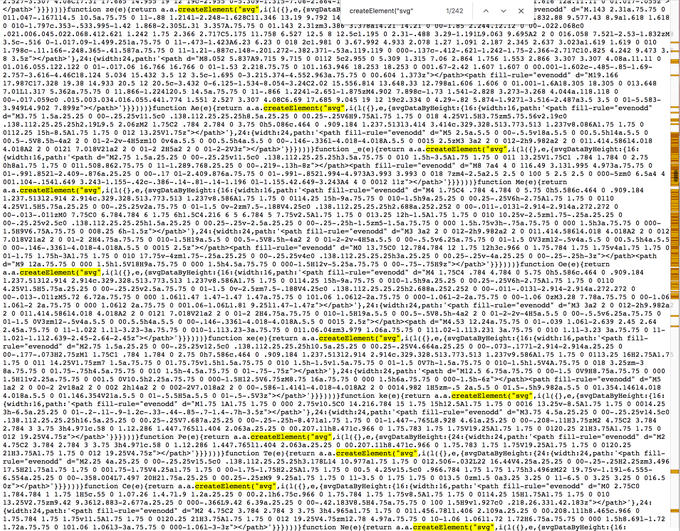
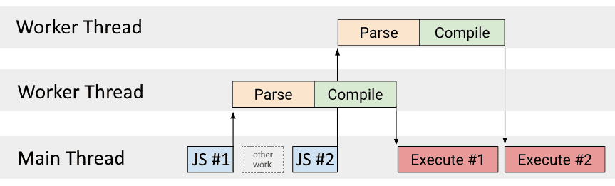
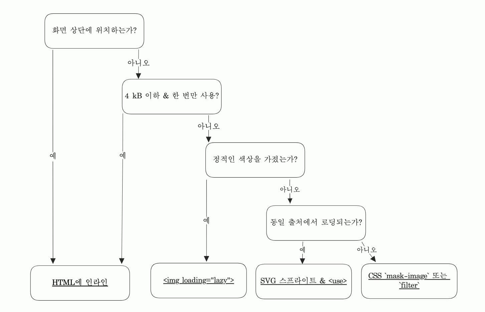

2023년 SVG-in-JS와 결별
작년 12월에 "우리가 CSS-in-JS와 헤어지는 이유"라는 글을 통해 더 이상 JS 번들 안에 CSS를 넣지 않으려는 이유를 설명했었습니다. 하지만, 오늘날 JS 번들에 CSS만 들어가는 것은 아닙니다. Preact의 저자 Jason Miller의 글에서 알 수 있듯이 SVG도 JS 번들에 들어갑니다.
SVG를 JSX로 import 하지 마세요. 가장 비용이 많이 드는 스프라이트 시트입니다. 다른 기술보다 최소 3배 이상 비용이 들고 런타임(렌더링) 성능과 메모리 사용 모두 해칩니다. 유명한 사이트의 번들을 살펴보면 거의 50%가 SVG 아이콘(250kb)이 차지하고 대부분 사용되지 않습니다. 
JS 안의 SVG에는 비용이 들고 SVG는 JS 번들의 소유물이 아닙니다
SVG-in-HTML로 돌아갈 때입니다.
JS 번들을 작고 성능 좋게 유지하면서 JSX에서 SVG를 사용하는 더 나은 방법들에 대해 알아보겠습니다.
목차
어떻게 `
먼저 SVG가 자바스크립트 소스 코드 내에 어떻게 포함되게 되는지 알아봅시다. 대게 이 작업은 JSX의 일부로 작성됩니다.
<svg viewBox="0 0 300 300">
<g>
<path d="M0 200 v-200 h200 a100,100 90 0,1 0,200 a100,100 90 0,1 -200,0z" />
</g>
</svg>// App.jsx
import HeartIcon from "./HeartIcon.svg";
const App = () => <HeartIcon fill="red" />;.svg 파일에 대해 import가 동작하도록 하기 위해서 번들러에게 자바스크립트(또는 타입스크립트)가 아닌 파일을 어떻게 처리해야 할지 알려주어야 합니다.
보통 svgr 같은 웹팩 로더가 사용되는데 이는 .svg 파일을 리액트 컴포넌트로 변환합니다.
이는 SVG 태그의 속성(fill="red" 같은)을 손쉽게 추가할 수 있도록 해줍니다.
// svgr을 거친 HeartIcon.svg (단순화 및 JSX 변환 전) - ⚠️️ 복사하지 마세요
export default (props) => (
<svg viewBox="0 0 300 300" {...props} {/* ⬅️ props spread 를 사용 했습니다*/}>
<g>
<path d="M0 200 v-200 h200 a100,100 90 0,1 0,200 a100,100 90 0,1 -200,0z" />
</g>
</svg>
);⚠️ 전체 SVG 컨텐츠를 반환하는 직접 작성한 리액트 컴포넌트는 앞선 이유와 함께 svgr에 비해 마이그레이션 하기 어렵기 때문에 안티 패턴입니다. SVG는 항상
.svg파일에만 넣도록 합니다.
렌더링된 결과는 다음과 같습니다:
<svg viewBox="0 0 300 300" fill="red"><!-- ⬅️ 차이점은 `fill` 속성 -->
<g><path d="M0 200 v-200 h200 a100,100 90 0,1 0,200 a100,100 90 0,1 -200,0z" /></g>
</svg>물론 편리하고 사용하기 쉽지만 사용 편의성에 대한 비용을 사용자가 지불해야 하는 단점을 수반합니다...
성능 딥 다이브: SVG-in-JS 가 안티 패턴인 이유
...그렇다면, JS 번들 안에 SVG 코드를 넣지 않으려는 이유는 무엇일까요?
파싱 & 컴파일자바스크립트 파싱과 컴파일은 공짜가 아닙니다. 번들에 더 많이 넣을수록 자바스크립트 엔진이 소스코드를 처리하는 시간이 더 오래 걸립니다.
빠른 M2 노트북에서는 그 차이가 크지 않을 수 있지만, 마이크로소프트 엣지 팀의 Alex Russel이 매년 보고하는 것처럼 성능 불평등의 격차가 있습니다. 그의 말처럼 전 세계 75퍼센트 이상 사용자를 이해하기에는 삼성 갤럭시 A50과 노키아 G11이 가장 적합한 기기입니다. 웹 개발은 부유한 지역뿐 아니라 모든 사람을 위한 포용적인 것이어야 합니다.
바이트 단위의 자바스크립트는 같은 크기의 이미지나 웹 폰트보다 브라우저 처리 비용이 더 많이 듭니다.
-- Tom Dale, web.dev
SVG는 자바스크립트가 아니라 이미지를 나타내는 HTML과 유사한 XML 태그입니다. JS 안에 이미지를 넣고 싶지는 않을 것입니다. SVG를 JS 번들 밖으로 옮기면 파싱 및 컴파일 단계에서 벗어나게 됩니다. 아래에서 이것이 왜 유익한지 알아보겠습니다.

크로미움에서 자바스크립트 다운로드 및 실행 시각화. 파싱 및 컴파일은 메인 스레드를 차단하지 않습니다.web.dev
파싱과 컴파일은 실행 직전에 일어납니다. 그래서 자바스크립트를 다운로드하고 실행할 준비가 되면 파싱에 걸리는 시간과 컴파일에 걸리는 시간은 사용자가 상호작용을 기다리는 시간입니다.
리액트의 경우 그 위에 하이드레이션도 필요합니다. 다운로드 + 파싱 + 컴파일 + 하이드레이션은 상호작용이 가능해 지기까지의 시간입니다. 컴포넌트 트리가 클 수록 하이드레이션에 더 많은 시간이 소요됩니다. 이 주제에 대해서는 Add Osmani의 "JavaScript 최적화 시작하기" 문서에서 자세히 다루고 있습니다.
참고로 압축은 처리 시간에도 긍정적인 영향을 미칠 수 있지만, JS 엔진은 압축되지 않은 소스 코드에서도 작동한다는 점을 잊지 마세요. 이를 위해
<link rel="modulepreload">를 사용하여 파싱 및 컴파일을 더 이른 시간으로 앞당기고 Service Worker로 가로채서 파싱 및 컴파일을 앞당길 수 있습니다. 이 경우 파싱 및 컴파일은 실행 직전이 아닌 다운로드 직후에 수행됩니다. 타이밍을 관리하면 더 나은 결과를 얻을 수 있지만 근본 원인을 해결하지는 못합니다.
메모리 사용
파싱된 내용은 페이지가 유지되는 동안 자바스크립트 메모리 힙에 보관되어야 하며, 대부분 브라우저에 있는 다양한 메모리 캐시 안에 저장됩니다. 갤럭시 A50에는 5기가 바이트의 RAM이 탑재되어 있으며, 해당 기기에서 실행되는 애플리케이션이 웹 사이트뿐만은 아니므로 남은 공간이 많지 않습니다. 사용자를 배려하세요.
JS 번들에서 SVG를 제거하는 모범 사례
시작하기 전에, 첫 번째 단계는 자바스크립트 번들에 SVG가 있는지 확인하는 것입니다. 소스 코드를 검사하여 "svg"를 검색하거나 Lighthouse에 내장된 번들 뷰어를 사용하여 확인할 수 있습니다. 보고서의 "Performance" 섹션의 "View Treemap" 버튼을 통해 접근할 수 있습니다.
번들 안에 적지 않은 양이 들어있는 경우, 이를 제거하는 데 도움이 되는 몇 가지 선택지가 있습니다. 다음 도표는 대부분의 경우 결정을 내리는 데 도움이 될 수 있습니다.

각 선택지에 대한 설명은 다음과 같습니다.
`SVG를 <img> 태그에서 사용하기 위해, 번들러/프레임워크에게 외부화하도록 명시해야 합니다(다른 말로, 정적 URL을 생성).
웹팩의 경우 모든 .svg 파일을 asset/resource1 형태로 설정하도록 웹팩 설정을 변경할 수 있습니다.
const config = {
// … 다른 웹팩 설정들 …
module: {
rules: [
{
test: /\.svg/,
type: "asset/resource",
},
],
},
};Astro와 같은 다른 프레임워크는 이를 자동적으로 수행합니다.
svg 파일은 JS 파일처럼 압축될 수 있으므로 인프라에 Brotli/Gzip 압축이 적용되어 있는지 확인하세요.
그러면 SVG를 참조하는 것이 일반적인(PNG/JPG/...) 이미지들처럼 쉬워집니다.
import HeartIcon from "./HeartIcon.svg";
const App = () => <img src={HeartIcon} loading="lazy" />;💡️ 성능 팁:
<img>를 사용하면 내장된 지연-로딩을 위해loading="lazy"와 같은 속성을 사용하거나 패치 우선순위를 바꾸기 위해importance="high"를 사용할 수 있습니다⚡️DPR(Device-Pixel-Ratio) > 1x 스크린에서 복잡한 SVG 애니메이션의 경우
<img>는 인라인 SVG보다 더 적은 CPU를 사용합니다.
⚠️ <img> 주의 사항:
현재 페이지에서 값을 상속받지 않기 때문에
currentColorCSS 값 및 CSS 커스텀 props (--variable) 사용은 어렵습니다. (SVG 파일은 DOM의 일부가 아닌 외부 리소스로 취급됩니다)3크로미움: SVG 애니메이션은 최대 60Hz까지 실행되며 DPR = 1x 스크린에서 더 많은 CPU를 사용합니다.2
SVG에 포함된
<a>태그는 클릭될 수 없습니다.
저는 이렇게 하나의 뷰포트 밖에 있는 SVG를 사용하는 것을 권장합니다. 하지만 스타일링이 필요하거나 개수가 많다면 다른 선택지 중 하나를 선택하는 것이 좋습니다.
SVG 스프라이트 - `use`를 사용하기fill 및 기타 (사용자 정의) CSS 속성 또는 currentcolor를 값으로 사용하려면 SVG를 로드할 수 있는 <use> 태그를 사용해야 합니다.
위와 동일한 웹팩 rules 와 함께 다음 처럼 SVG를 참조할 수 있습니다.
import HeartIcon from "./HeartIcon.svg";
const App = () => (
<svg>
<use href={`${HeartIcon}#heart`} />
</svg>
);자세히 보면 <use>에 필요한 ID를 참조하고 있음을 알 수 있습니다. HeartIcon SVG를 변경해 봅시다.
<svg viewBox="0 0 300 300" id="heart">
...
</svg>사이트에 많은 SVG가 있는 경우 모두 하나의 파일에 넣을 수 있습니다. SVG 스프라이트 는 <symbol> 태그를 사용하여 빌드됩니다.
말 그대로 ID 를 부여해야 사용(<use>)할 수 있습니다.
스타일링, currentcolor 등은 모두 이전과 동일하게 작동합니다.
<!-- icons.svg -->
<svg>
<!-- 1: `<defs>` 태그를 추가 -->
<defs>
<!-- 2`<symbol>`을 감싸고 ID 추가 (`viewBox`) -->
<symbol id="icon1">
<!-- 3: `<symbol>`안에 컨텐츠 복사 -->
...
</symbol>
<symbol id="icon2">...</symbol>
</defs>
</svg>스프라이트 파일은 한 번만 로드되고 캐시됩니다. 이제 다음과 같은 방식으로 SVG를 참조할 수 있습니다.
<svg><use href="icons.svg#icon1" /></svg>
<svg><use href="icons.svg#icon2" /></svg>직접 SVG 스프라이트를 작성하는 데는 시간이 걸리지만 ➡️도구 챕터에서 이를 자동화하는 오픈소스 솔루션을 모아두었으니 걱정하지 마세요.
더 많은 JS 제거하기: `fill`, `stroke`, `width`, `height` 와 같은 것에 CSS & currentcolor 사용⚠️
<use>주의사항:
<mask>와<clippath>는 외부에서 로드해온 SVG에서 동작하지 않습니다. ➡️ 인라인화로 해결하세요.SVG는
<use>를 사용할 때 CDN에서 로드될 수 없습니다. ➡️ CORS 챕터
아래와 같이 코드를 작성했을 수 있습니다.
// 😐 최적이 아님
const Icon = (favColor, width) => (
<svg>
<use
href={`${HeartIcon}#heart`}
fill={favColor ? favColor : "red"}
width={width}
/>
</svg>
);
const App = () => (
<>
<Icon favColor="#FFFF00" />
<Icon width={300} />
</>
);이렇게 하는걸 권장하지 않습니다. 로직은 다시 자바스크립트 번들에 포함되며 자바스크립트 엔진에서 실행해야 합니다. CSS-in-JS를 피하는 것 처럼, 클래스 이름과 CSS를 사용해 SVG 스타일을 지정할 수 있도록 하려고 합니다.
// ✅ better
const Icon = (className) => (
// 클래스를 추가하고 사용자가 CSS를 통해 세부사항을 다룰 수 있도록 합니다. ⬇️
<svg>
<use href={`${HeartIcon}#heart`} className={`heart ${className}`} />
</svg>
);
const YellowHeart = () => <Icon className="yellow" />;
const BigHeart = () => <Icon className="big" />;
const App = () => (
<>
<YellowHeart />
<BigHeart />
</>
);이제 currentcolor를 사용해서 SVG가 CSS 속성 color 에서 색을 상속하도록 할 수 있습니다.
/* 👍 good */
.heart {
fill: currentcolor; /* ⬅️ 현재 `color` 적용 */
}
/* ⬇️ 사용하는 디자인 시스템에서 가져온 클래스를 사용할 수 있고 SVG에만 국한되지 않습니다. */
.big {
width: 300px;
}
.yellow {
color: #ffff00;
}또는 SVG에 접근하면 더 좋습니다.
<!-- HeartIcon.svg -->
<svg viewBox="0 0 300 300" id="heart">
<g>
<path
d="M0 200 v-200 h200 a100,100 90 0,1 0,200 a100,100 90 0,1 -200,0z"
fill="currentcolor"
/><!-- ⬆️ `fill`/`stroke` 에 `currentcolor` 추가 -->
</g>
</svg>/* 🏆 최적 */
.heart {
/* `fill`은 더 이상 CSS에 필요하지 않습니다. */
}<use> 태그에 적용되는 모든 CSS 속성은 참조된 <svg>/<symbol> 태그에 자동으로 스타일을 적용합니다.
따라서 <path> 요소의 색상을 건드리지 않으면서 .heart 에 stroke를 추가할 수 있습니다.
⚠️️ 주의: <use> 의 너비와 높이는 원본 <svg> 에 viewBox 속성 (또는 <view>)가 있어야 합니다.
가장 최근의 솔루션 이지만 너무 많은 변경이 필요하지 않은 솔루션은 예를 들어 NextJS 13.4에서 사용할 수 있는 곧 출시될 리액트의 서버 컴포넌트를 채택하는 것입니다. 런타임에 컴포넌트의 동작을 변경해야 할 때 특히 유용하며 서버에서만 실행되는 JSX를 작성할 수 있습니다. 이렇게 하면 SVG가 더 이상 브라우저에 제공되는 자바스크립트 번들에 포함되지 않습니다. 서버에만 유지하기 위해 파일에 "use client"를 추가하지 않으면 되기 때문에 간단합니다.
💡️ 모든 SVG를 서버 컴포넌트로 만들면 HTML 응답에 인라인 처리되고 여기에도 단점이 있기 때문에 인라인 챕터를 꼭 읽어 보세요.
CORS(교차 출처 리소스 공유)의 경우: CSS를 사용하세요.SVG의
-- O’Reilly Media book by Amelia Bellamy-Royds, Kurt Cagle, and Dudley Storey
<use>로 외부 에셋을 사용하려면 동일한 도메인에서 (스프라이트)SVG를 로드해야 합니다. CDN을 사용하는 경우 인용 제한에 부딪히게 됩니다.
이제 두 가지 선택지가 있습니다.
이 문제를 피하는 방법은
<img>챕터에서 설명한 방법을 따르는 것입니다. 그러나 이렇게 하면currentColor가 동작하지 않습니다.한 가지 색상만 적용해야 하는 경우 직접 최적화할 때 가장 성능이 좋은 방법으로 필터가 포함된
<img>를 사용하거나, 적은 노력을 들여서 이미지를 마스크 합니다.
.heart {
mask-image: url("somecdn.com/HeartIcon.svg#heart");
/* ⬇️ 'color' the SVG */
background-color: currentcolor;
}하지만 이 접근 방식을 사용하면 LCP 요소에 사용되는 CSS 배경 이미지와 동일한 단점이 있습니다.
브라우저는 SVG를 검색하고 다운로드하기 전에 CSS를 먼저 다운로드하고 실행해야 하므로 SVG가 의미 있게 표시될 때 까지 시간이 길어지게 됩니다.
이 문제는 <link rel="preload" as="image">를 사용하거나 CSS를 인라인으로 처리하여 완화할 수 있습니다.
또한 <img> 의 모든 주의 사항은 SVG에도 적용됩니다 (mask도 DOM의 일부가 아님).
한 가지 장점은 요소가 숨겨져 있으면(display: none으로) 브라우저에서 mask 이미지를 다운로드하지 않는다는 것입니다.
성능 vs 로딩 시간: 인라인을 할 것인가, 말 것인가?
인라인은 하나의 HTTP 요청을 아끼도록 해주며 SVG 가 즉각적으로 표시됩니다. 단점은 중요한 CSS와 마찬가지로 브라우저에 캐시되지 않은 모든 페이지에서 바이트가 다운로드 된다는 것입니다. 또한, 인라인 SVG는 DOM의 일부이기 때문에 브라우저 계산량을 증가시키게 됩니다. 그래서, 자바스크립트 엔진이 처리해야 하는 양을 줄이되, HTML 응답의 다운로드 시간을 많이 느리게 하거나 DOM을 부풀리고 싶지는 않습니다.
그러므로, 우리는 인라인할 항목에 대한 몇 가지 규칙을 정할 수 있습니다.
로고는 높은 우선순위를 가집니다. 로고는 사용자가 당신의 브랜드를 인식할 수 있도록 합니다. 어떤 웹사이트들은 로고 로딩 속도를 측정하기도 합니다. (비록 이것이 LPC요소가 아니더라도 말이죠). LCP 요소가 SEO에는 중요한 요인이지만(코어 웹 바이탈 이므로), 시각적 완성도는 대부분의 사용자에게 "웹 사이트를 지금 사용할 수 있다"는 것을 의미합니다. 또한 시각적 '깜빡임' 또는 CLS를 방지합니다.
다음은 검색 또는 햄버거 아이콘같이 뷰포트에 있는 아이콘입니다. 이들은 보통 사용자가 터치하는 아이콘입니다. 그래서 늦게 로딩될 경우 사용자 경험에 영향을 미칩니다. 이쯤 되면 중요 CSS와 유사점을 발견할 수 있을 것입니다. 폴드 위쪽의 모든 것이 더 중요하고, 폴드 아래쪽의 모든 것은 그다지 중요하지 않습니다.
나머지는 인라인 하지말고 가능하면 지연-로딩 합니다.
경험상 critical CSS와 비슷한 예산을 권장합니다. Astro는 파일 인라이닝 임계값으로 4 kB를 사용합니다.1 일반적으로 상단 회면의 모든 것(CSS, SVG, JS, 콘텐츠)은 14 kB(압축되었을 때)1 이하로 유지해야 합니다.
인라이닝 방법은, Cloudfour의 SVG 아이콘 벤치마크에서 가장 빠른 기술을 사용하거나 <img src="data:image/svg+xml,%3Csvg xmlns='..."
주의 사항에 해당한다면 <svg>를 직접 삽입하세요.
예산을 초과하는 경우 먼저 벤치마킹하고 필요한 경우 인라인하지 않는 기술을 사용하고 <link rel="preload" as="image">를 사용하여 리소스 우선순위를 높여 보세요.
인라인을 사용하기로 결정하고 캐싱 이점을 극대화하려면 첫 번째 방문자에게는 아이콘을 인라인하고, 백그라운드에서 스프라이트 SVG를 미리 가져오고(<link rel="prefetch">),
이후 방문자에게는 서버에서 쿠키 값을 확인하여 스프라이트 SVG만 로드할 수 있습니다 (예: 서버에서 쿠키 값을 확인함).
이제 무엇을 인라인해야 하는지 알아보았으니, SVG를 JS 번들에 다시 추가하지 않고 인라인하는 방법을 살펴봅시다.
아래에서는 <body> 바로 뒤에 하트 아이콘을 인라인 처리하여 스프라이트를 참조하는 모든 SVG가 처음부터 바로 표시되도록 했습니다.
덜 중요한 스프라이트에 대해서도 동일한 기법을 사용하여 스프라이트 출력을 </body> 바로 앞에 배치할 수 있습니다.
import fs from "node:fs";
const svgIcons = await fs.readFile("path/to/icons.svg"); // ← SVG file 컨텐츠 로딩
// … fastify 나 express 와 같은 HTTP 프레임워크를 사용한 경우
app.get("/", function () {
const reactOutput = renderToString(App);
return `<!doctype html><head><title>SVG-in-HTML</title></head>
<body>
<!-- ⬇️ output the SVG sprite to be re-used and make it invisible -->
<div style="display:none">${svgIcons}</div>
${reactOutput}
</body>`;
});이제 SVG를 사용해야 하는 모든 인스턴스가 파일에 연결되지 않고 ID에만 연결되도록 해야 합니다:
<!-- `href` 속성에 누락된 파일 경로에 유의하세요. -->
<svg><use href="#heart"></svg>하지만 주의할 점은 이제 ID가 SVG 파일 내부에만 적용되는 것이 아니라 전역적으로 적용된다는 점입니다.
짜잔, SVG-in-HTML입니다. 페이지/출력별로 사용된 모든 ID를 추출하도록 확장할 수 있으므로 모든 SVG가 아닌 실제로 사용된 SVG만 추출할 수 있습니다. 사용된 스타일은 중요한 CSS에 대해 이 작업을 수행하는 좋은 예입니다.
정리
설명한 기술을 사용해 자바스크립트 번들을 더 작고 성능 좋게 만들 수 있으므로 오래된 장치의 속도를 줄이고 더 포용적인 인터넷을 만들 수 있습니다.
웹 성능과 관련한 주제에 대해서는 이 외에도 더 쉬운 방법 또는 더 최적화가 필요한 것들이 있을 수 있습니다. 때문에 SVG 최적화에 뛰어들기 전에 SVG-in-JS가 가장 큰 원인이 아닐수 있다는 점을 명심하세요. 측정하고나서 최적화 하세요.
팁: Ctrl+F 로
<svg>를 찾아보면 충분한 아이디어를 얻을 수 있습니다.
JS 번들을 더 작게 만드는 다른 방법으로는 리액트 대신 Preact를 사용하고, Axios 대신 Redaxios를 사용하고, 더 큰 모듈(예: uuid, clsx)을 대체하는 Luke Edward의 모듈 컬렉션을 살펴보고, CSS-in-JS를 ecsstatic/kuma UI/Panda와 같이 런타임 오버헤드가 없는 솔루션으로 대체하거나 CSS 모듈로 대체하는 방법이 있습니다. 큰 모듈을 작은 모듈로 대체하는 일부 웹팩 플러그인도 있습니다. 번들포비아는 작은 모듈을 찾아주는 친구입니다.
도구 / 스니펫
Ben Adam이 비슷한 글을 작성했는데, 여기서 그는 리액트에서 SVG 스프라이트를 관리하는 방법에 대한 스니펫을 보여줍니다.
Cloudfour’s SVG Icon Stress Test, Tyler Sticka가 다양한 기법에 대한 렌더링 성능 벤치마크를 제시합니다.
Epic Stack + SVG sprites - "rmx-cli를 사용하여 스프라이트 생성 자동화하기"
JetBrains SVG sprite loade - "SVG 스프라이트 생성을 위한 웹팩 로더".
Icon-pipeline - "🚚 SVG 아이콘 파이프라인 - 아이콘 최적화 및 SVG 스프라이트 빌드"
SVGomg - "SVG 옵티마이저의 GUI"
각주 & 주석
이 포스팅에 대해 소중한 피드백을 주신 Barry Pollard 와 Kevin Farrugia에게 감사드립니다.
1: 웹팩 문서. 대체제로, 하나의 SVG에 대해 new URL('path/to/svg.svg', import.meta.url)를 사용할 수 도 있습니다. svgr을 계속 사용하기를 원한다면 svgr 문서에서도 어떻게 URL을 얻는지 설명하고 있습니다.
2: 인라인 SVG는 DPR = 1x 스크린에서 컴포지터에서 실행됩는데, 이는 보통 크로미움 버그에서 언급된 것처럼 더 높은 성능으로 이어집니다. 1x DPR을 넘어서는 스크린에선, 반대로, <svg>가 <img>보다 더 많은 CPU를 소모합니다. 직접 확인해볼 수 있습니다: <img> 코드펜, 인라인 svg 코드펜. 개발자 도구 -> Ctrl + Shift + P > Performance monitor를 사용하세요.
3: Alfredo Lopez는 그의 동료중 한명이 보여준 교묘한 꼼수를 알려주었습니다. 동적으로 <style>:root { --color: green }</style>를 SVG에 넣기 위해 쿼리 매개변수를 사용할 수 있습니다. (예: HeartIcon.svg?color=green) 그래서 CSS 커스텀 props를 사용할 수 있습니다. (이 기술에 대한 블로그 게시물이 뜨면 여기에 링크하겠습니다.)